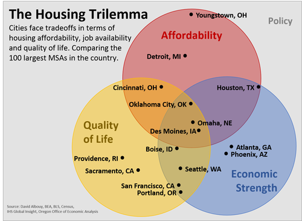

A dataviz remix
I came across some interesting analysis from Josh Lehner at the Oregon Office of Economic Analysis about the “Housing Trilemma”.
The Housing Trilemma, captured in the chart below is based on the following claim:
Every city wants to have a strong local economy, high quality of life and housing affordability for its residents. Unfortunately these three dimensions represent the Housing Trilemma. A city can achieve success on two but not all three at the same time. Underlying all of these tradeoffs are local policies as well.
 *image from Oregon Office of Economic Analysis.
Josh put together an interactive chart, both as Excel and a Google Doc. The charts allowed you to toggle between metros and see how they stacked up across ten variables in 4 categories:
Affordability
- Price Income Ratio
- Cost Burdened Renters
- Vacancy Rate
Job Availability
- Job Growth
- Working Age Emp-Pop Ratio
- Start-Ups
Livability
- Quality of Life
- Household Purchasing Power
Policy
- Housing Unit Growth
- Housing Cost Differential
The Excel spreadsheet contained all the data, along with a list of sources, and the percentile rank of each metro across each variable.
The interactive spreadsheet was well done and easy to use, but I thought this might be a good case for a remix. Using animation through tweenr we could compare all the metros at once.
The Remix
Ultimately, I ended up with the chart below. Let’s build it.

Building the remix
I’m going to be using R and the animation and tweenr packages along with ggplot2. See my earlier post about tweenr for an introduction, and more examples here.
The R code for the viz above is below. I used some Excel tricks to manipulate the original dataset into a text file. We start with a simple text file you can download called trilemma.txt.
{% highlight r %} #load the data tridata <- fread(“trilemma.txt”)
#get a list of variable names myvars<-unique(tridata$var)
#convert character variables into strings tridata$metro<-factor(tridata$metro) tridata$var<-factor(tridata$var)
define a function to subset data as dataframe (data tables don’t seem to work with tweenr)
myf<-function(m){as.data.frame(tridata[var==m, list(metro,var,value,percentile)])}
use lapply to generate the list of data sets:
my.list<-lapply(myvars,myf)
set up animations
tf <- tween_states(my.list, tweenlength= 1, statelength=3, ease=rep(‘cubic-in-out’,51),nframes=300)
convert back to data table for easier use
tf<-data.table(tf)
#run the animation oopt = ani.options(interval = 0.075) saveGIF({for (i in 1:max(tf$.frame)) { p<- ggplot(data=tf[.frame==i], #we’ll look through each frame aes(y=reorder(metro,percentile), #we want the metros to be ordered by their rank (percentile, so we reorder) x=value,label=metro,color=value))+
#minimal style from ggthemes
theme_minimal()+
#set up colors red to blue, high to low
scale_colour_gradient(low="red",high="blue")+
#add a label
geom_text(size=2.5,hjust=-0.1)+
#draw a point
geom_point()+
# adjust axis
labs(x=tf[.frame==i,]$var,
y="metro",
title="Housing trilemma visualized - metros ranked by indicator",
subtitle="based on data & analysis by Josh Lehner, Oregon Office of Economic Analysis",
caption="@lenkiefer Source: Oregon Office of Economic Analysis: https://oregoneconomicanalysis.com/2016/06/08/the-housing-trilemma/\n2014 ACS, IHS Global Insight, U.S. Census Bureau, BEA, davidalbouy.net")+
# adjust plot style:
theme(axis.text.y = element_text(size=7))+
theme(panel.grid.major.y = element_blank())+
theme(axis.text.y = element_blank())+
theme(plot.title=element_text(size=12))+ theme(legend.position="none")+
theme(plot.caption=element_text(size=8,hjust=0,vjust=1,margin=margin(t=10)))+
theme(plot.margin=unit(c(0.25,0.25,0.25,0.25),"cm"))
print(p) ani.pause() print(i) } for (i in 1:10){ print(p) ani.pause() print(i) }
},movie.name=“trilemma_viz.gif”,ani.width = 600, ani.height =800) #save movie {% endhighlight %}